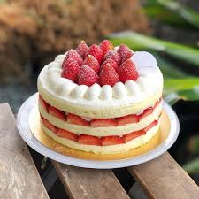

草莓蛋糕
作法：
1. 蛋黃與白砂20g放入同一攪拌盆中，打至砂糖融化。
2. 加入牛奶拌勻。
3. 再倒入植物油，打至蛋液表面顏色變淡。
(類似微微打發，原作者說是乳化)4. 加入過篩兩次的麵粉，以打蛋器攪拌均勻。(勿過度攪打)
5. 添加香草精，同樣拌勻6. 從冰箱取出冰蛋白，使用打蛋器，左右移動，先切斷蛋白中的稠狀連結。再以旋轉攪拌盆的方式，
用高速將蛋白打出大泡泡，加入1/3砂糖，
持續攪打至蛋白體積明顯變大，再加入1/3的砂糖，然後將打蛋器切換為中速，打至濕性發泡，接著就能加入剩餘的1/3砂糖
，再使用低速打至接近乾性發泡即可。(不必太乾，尖端微微下垂的狀態就好)

Cedric Grolet
馬卡龍
焦糖布丁
心得